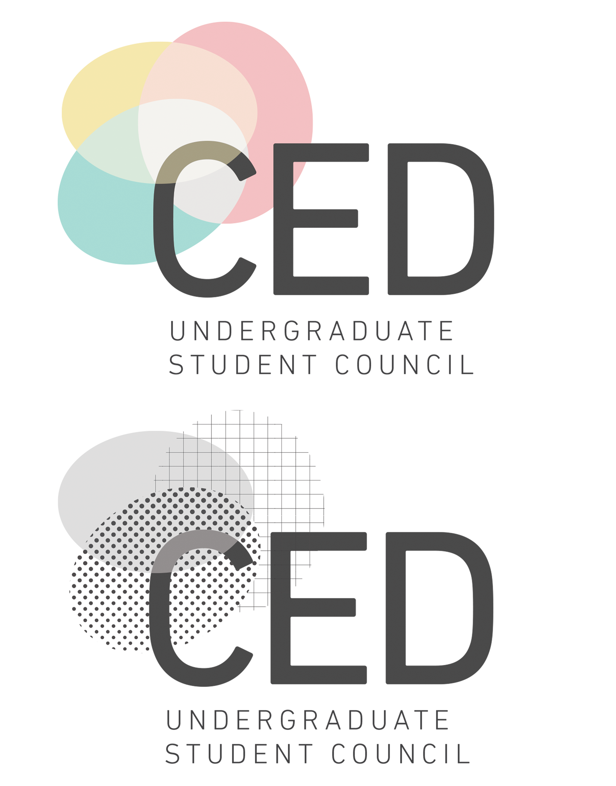
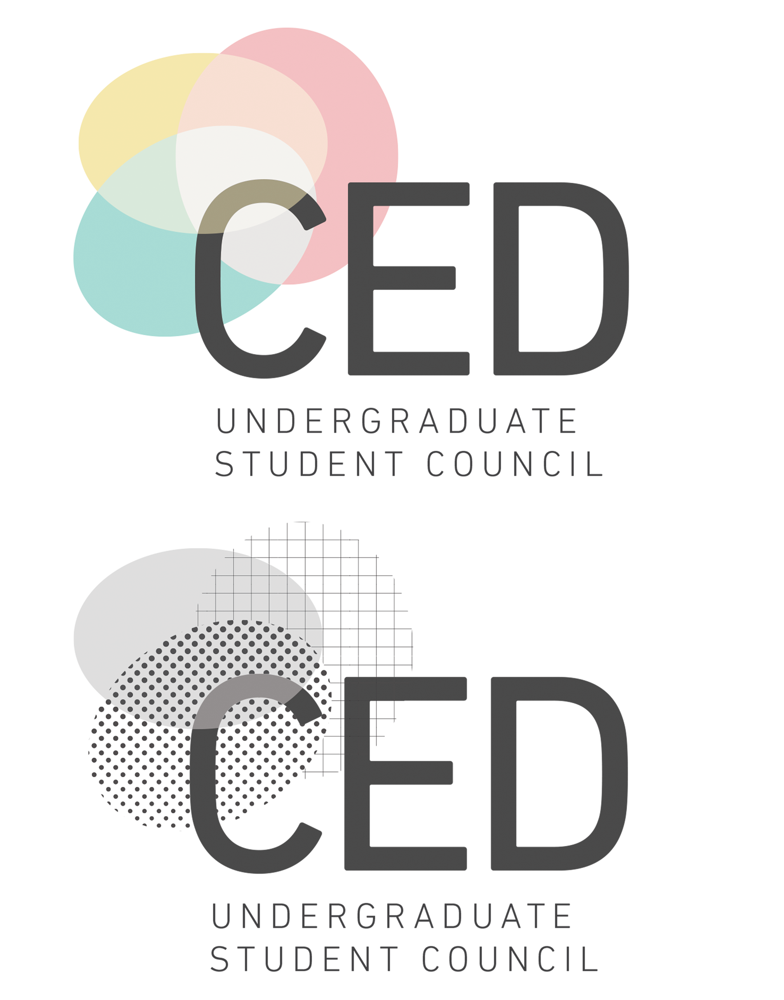

A logo I created for the Women in Computer Science club at UIUC. The inspiration for this design came from the need to include women within the CS community — with this logo, I approached that quite literally; the face is within the ‘C’ and the ‘S’ formed by the hair.
An informational flyer that doubled as a ticket, handed out to attendees of my high school’s Senior Ball. The skyline at the bottom is the San Francisco skyline, advertising the location of the event — on a cruise ship in the SF bay. The event was wonderful, if you were wondering (I planned it!).
 
A set of logos that I created for the CED Undergraduate Student Council at Berkeley — two color options and one monochrome option. The colors are meant to represent the fields of study that come together under CED, and the monochrome represents common patterns seen in architectural tools.
A promotional flyer created for the Berkeley Innovation Design Career Fair, which I organized. Also obligatory plug — if you of your company is interested in working with Berkeley Innovation, shoot me an email! We do cool stuff 😅.